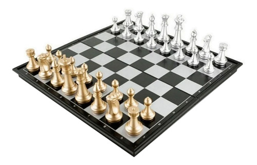

Um jogo eletrônico (português brasileiro) ou jogo eletrónico (português europeu),
também chamado videojogo ou pelo anglicismo videogame, é um jogo no qual o jogador interage
através de periféricos conectados ao aparelho, como controles (joysticks) e/ou teclado com imagens
enviadas a uma televisão ou um monitor, ou seja, aquele que usa tecnologia de computador.[1]
O termo inglês video game, ganhou a forma aglutinada no Brasil (como videogame), tanto para se
referir a videojogos, como para se referir aos consoles onde os jogos se processam.
Os sistemas eletrônicos usados para jogar videojogos são conhecidos como plataformas — como,
por exemplo, computadores, arcades, celulares e consoles.
Jogos

Jogo é um termo do latim “jocus” que significa gracejo, brincadeira, divertimento
. O conceito de jogo consiste numa atividade física ou intelectual formada por um conjunto de regras
e define um indivíduo (ou um grupo) como vencedor e outro como perdedor.